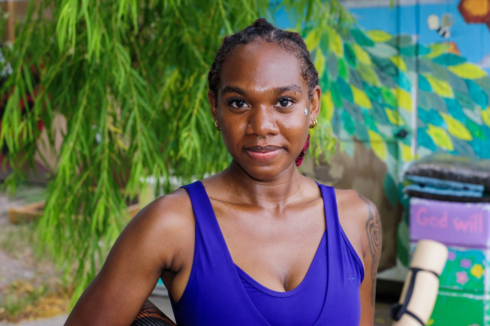
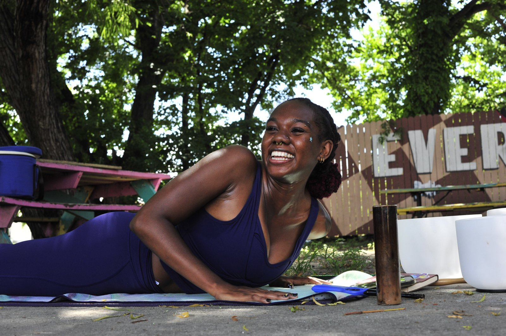
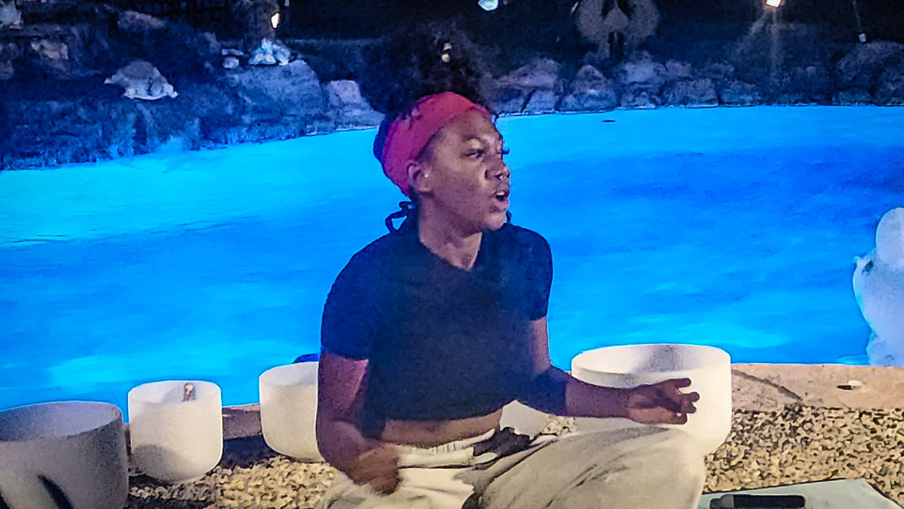

Community · Profile
Stay for the tea: Nahnah and Interim Flows
She grew up in South Park, left the military in 2022, and now runs Interim Flows: park yoga, sound baths and tea circles that ask Houston to stay after class.

The candles kept blowing out. On a September night in a backyard on a quiet cul-de-sac, five people lay on floats in a pool lit from below, and a woman at the edge of the water talked them down into their bodies, from the crown of the head to the toes and back again. Then she stopped talking, and the crystal bowls took over.
That was Nahnah, and that backyard is one stop on a circuit she has built across Houston. Under the name Interim Flows she teaches in parks, a community garden, rooftops and the occasional pool, and yoga is only part of what she does.
“I am more than just, you know, a yoga instructor even though that’s one of the mediums,” she told me in July, when I asked how she wanted to be introduced.
Ask her what it all adds up to and she goes straight to community. “My hope is to bring awareness back to our communities,” she says. “When you become aware of self, you become aware of everything that’s happening around you.” What follows from that, she says, is “liberation – both on and off the mat.”
South Park, then everywhere
She is twenty-five, and she starts her own story at the very beginning: born on a couch in South Park, in the corner of it people there call Dead End. She doesn’t romanticize what that meant.
“When it comes to high blood pressure, diabetes, high cholesterol, I think it’s a lifestyle thing that a lot of us don’t really have the resources for,” she said. “So, I can say that just being born where I’ve come from, which is Dead End, it’s a predominantly Black neighborhood, ‘the hood,’ – We didn’t really have these resources of course.”
The turn came after the military. “I believe it started in 2022. I had just got out of the military. I felt lost in a lot of different ways. I knew I didn’t want to involve myself with heavy consumerism anymore because that’s mostly what I was doing.” She had been making fashion-haul videos. She danced backup for a big Houston artist for eight months (she leaves the name for anyone who wants to dig) and found she did not want to turn dancing into a job. Then a friend missed her flight on a trip they had planned to Miami. Nahnah went by herself, though she was afraid to, and she says that trip changed the direction of her life. She went vegan that October.
“I am somebody who don’t like to be a slave of anything,” she said, “whether that’s a phone, social media, people, situations.”
Yoga came next, and it came for the philosophy. “I enrolled myself in yoga because I love the philosophy of yoga and also I understood how big, how important it is in this time to be liberated on the mat and off the mat.” She did her 200-hour teacher training through Black Swan Yoga, from June to August 2025. “I went through training and I started teaching right away because I’m someone who likes to dive into things.”
A class in every country
“I pretty much make it my business to get a massage and also take a yoga class in every place I visit,” she said.
In Thailand, for a month around her twenty-fourth birthday, a ride-share driver’s girlfriend walked her through Bangkok at night looking for an ATM that worked. They found closed machines, got lost on the way back, and laughed about it afterward. “I just remember feeling so safe,” she said. She had already posted a video asking whether she was scared as a Black woman traveling solo in Thailand, and the answer surprised her: “I absolutely felt, again, super safe. All the relief in the world.”
The idea she teaches by came from Japan. Last December, in Tokyo, she took a Bhakti yoga class taught in Japanese. When it ended, nobody rushed out.
“What I noticed when I went to Japan was that their yoga, after yoga, they would sit in a circle and have tea and catch up and talk about life,” she said. “It was truly inspiring to me because it reminded me of the work that I … really desire to do here, actually talk to people and not just market or sell to people a yoga class.”
“…actually talk to people and not just market or sell to people a yoga class.”
In September she went to Bali. What it gave her, she says, was “the insight that no matter how far you are from someone else in the world we all have similar boxes that we put ourselves in,” around lifestyle and cultural norms.

The in-between
Back in Houston she built that circle into her calendar. Her new moon and full moon gatherings are billed as Yoga and Communitea: a slow flow, singing bowls, herbal tea, journals, and time to talk. At the new moon, people dress candles with oils and herbs and write down what they intend to start. Her classes end in a sound bowl meditation. On Saturdays in the warm months she teaches donation-based yoga at Eleanor Tinsley Park; on Sundays she has taught at a Third Ward community garden before the gardening starts.
“I think that it’s important to know who you’re teaching to and who you are surrounding yourself or who you’re in community with,” she said. “It’s genuinely important. We’re all so different, but we all experience the same emotions.”
She explained the name Interim Flows in an Instagram post last year. It came to her while she was listening to Jhené Aiko’s “W.A.Y.S.,” a song about there being no real end and no real beginning. Everyone who joins a class, she wrote, is coming out of one season of life or heading into the next, and the practice is the in-between. The website she launched this month puts it more plainly: “This space, the ‘in-between’ is where life truly happens.”
That idea stretches her schedule well past the mat. In the last few months she has run rug-tufting classes, a couples stretch that ends with partners writing each other letters, an incense-rolling workshop where you seal a letter to yourself with wax, children’s yoga in a garden, and candlelit one-on-one sessions. She plays the bowls herself.
Her profile calls her a Houston yoga movement curator. Asked what curating means to her, she says the first words that come to mind are “authentic creation.” Whether it is a yoga flow or a workshop, “It is all deeply inspired from my human experience.”
I asked her what she found missing in Japan that we have here. “I believe that we have a lot of authenticity here that we don’t really give ourselves credit for,” she said. “We, nine times out of ten, shun the people who are authentic. I, being an authentic person myself, of course, I get labeled ‘weird’ in a lot of ways by family and things like that. But do I give a damn? No.”
Back at the pool

That night in September she gave the evening a theme before anyone got wet: how we experience pleasure. Later, helping someone onto a float in the shallow end, she kept telling them she had them.
Afterward there was apple-cinnamon tea, and the kind of talk that only happens after people have been quiet together for half an hour. Then everybody helped put the floats away.
Hearing herself on the recording afterward was “intimidating,” she says. “Still intimidated by hearing my own voice whenever I am leading or guiding something.” She is working past what she called years of perfectionism. “Now I am learning to go with the flow of things and I’ll learn better methods as I continue to use my voice.”
This story comes from Frankie Mohammed’s time with Nahnah in person: her classes at Third Ward Chess Park, where he has played flute alongside her, her floating sound bath in September, which he also played, a long sit-down conversation in July, and the conversations they have kept up since. It also draws on what she shares herself, on her website and her Instagram. Nahnah goes by one name.